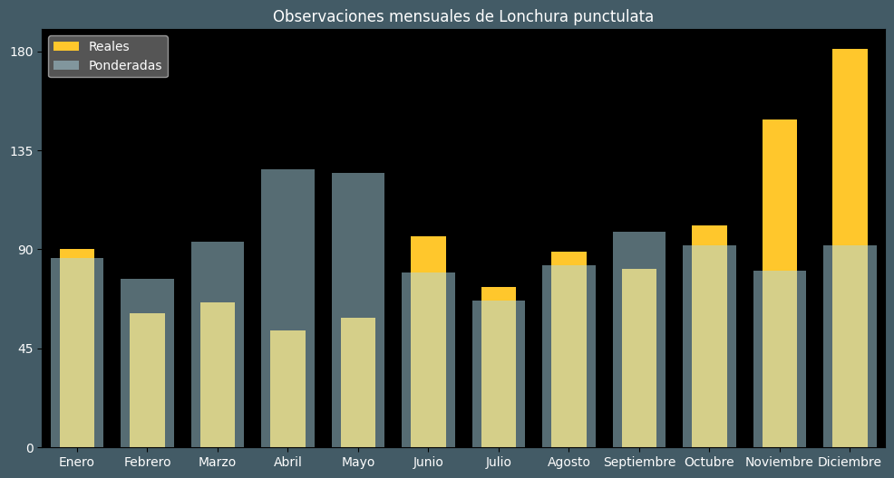

Observaciones por mes
Observations por hora

Categoría IUCN: LC
Género: Lonchura
Familia: Estrildidae
Orden: Passeriformes
Descubrimiento: Linnaeus (1758)
| Idioma | Nombre |
|---|---|
| Afrikaans (af) | ? |
| Arabic (ar) | ? |
| Belarusian (be) | ? |
| Bulgarian (bg) | Люспогърда амадина |
| Catalan (ca) | Maniquí d'escates |
| Chinese (zh) | 斑文鸟 |
| Chinese traditional (zh-TW) | 斑文鳥〔斑胸文鳥〕 |
| Croatian (hr) | Ljuskastoprsa amadina |
| Czech (cs) | Panenka muškátová |
| Danish (da) | Muskatfinke |
| Dutch (nl) | Muskaatvink |
| English (en) | Scaly-breasted munia |
| Estonian (et) | Võrkamadiin |
| Finnish (fi) | Suomumanikki |
| French (fr) | Capucin damier |
| German (de) | Muskatbronzemännchen |
| Greek (el) | ? |
| Hebrew (he) | ? |
| Hungarian (hu) | Muskátpinty |
| Icelandic (is) | ? |
| Indonesian (id) | Bondol peking |
| Italian (it) | Munia pettosquamato |
| Japanese (ja) | シマキンパラ |
| Korean (ko) | 얼룩무늬납부리새 |
| Latvian (lv) | Garšvielu smailastīte |
| Lithuanian (lt) | Dryžoji munija |
| Maceodnian (mk) | ? |
| Malayalam (ml) | ചുട്ടിയാറ്റ |
| North_sami (se) | ? |
| Norwegian (no) | Muskatnonne |
| Persian (fa) | ? |
| Polish (pl) | Mniszka muszkatowa |
| Portuguese (pt) | Capuchinho-dominó |
| Russian (ru) | Чешуйчатая амадина |
| Serbian (sr) | Muškat zeba |
| Slovak (sk) | Mníška muškátová |
| Spanish (es) | Capuchino punteado |
| Swedish (sv) | Fjällig munia |
| Thai (th) | นกกระติ๊ดขี้หมู |
| Turkish (tr) | Pullu munya |
| Ukrainian (uk) | Мунія іржаста |